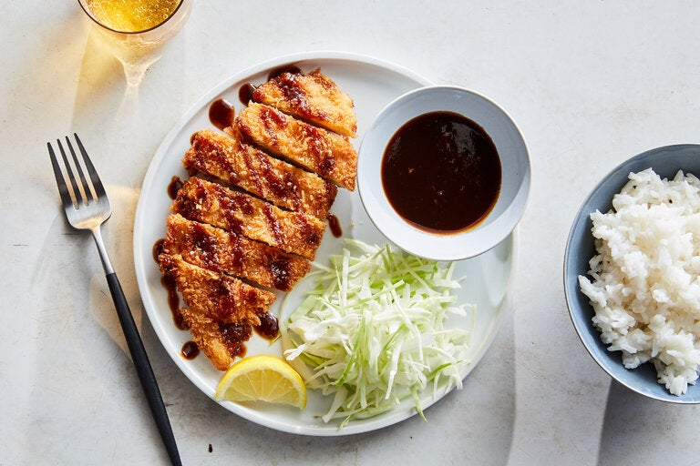

How to make Chicken Katsu
Experience the authentic taste of Japan with our crispy and delicious Chicken Katsu meal. Served with rice and veggies.
Katsu, a popular Japanese comfort food of breaded cutlets, is commonly made with chicken or pork. For this chicken version, boneless chicken breasts are pounded thin, dredged in flour, egg and panko, then fried until golden brown for an irresistible crispy crust that yields to — and protects — juicy meat inside. The traditional accompaniments are a mound of crunchy shredded cabbage, steamed rice and a generous drizzle of sweet-savory katsu sauce. Also called tonkatsu sauce, it's a tangy Japanese-style barbecue sauce made with soy sauce, Worcestershire sauce, tomatoes, ginger and clove. Though you can purchase bottles of it in Asian markets or online, the sauce is easy to make, lasts indefinitely in the fridge and serves as a great all-purpose dip.
Ingredients Needed
- For Tonkatsu Sauce
- 6 tablespoons ketchup
- 6 tablespoons Worcestershire sauce
- 4 teaspoons unsulphured molasses
- 2 teaspoons low-sodium soy sauce
- 2 teaspoons granulated sugar
- ¼ teaspoon grated peeled fresh ginger
- ⅛ teaspoon ground cloves
- For Chicken Katsu
- Vegetable oil, as needed for frying
- ½ cup all-purpose flour
- 2 large eggs, beaten
- 1½ cups panko bread crumbs (about 3½ ounces)
- 2 (8-ounce) boneless, skinless chicken breasts, halved crosswise then pounded ¼-inch-thick
- Kosher salt and black pepper
- 4 cups tightly packed finely shredded green cabbage (about 12 ounces)
- Tonkatsu sauce, steamed rice and lemon wedges, for serving
Steps:
- Prepare the tonkatsu sauce: In a small bowl, combine all of the ingredients and mix well. (Makes ⅔ cup.)
- Prepare the chicken: Fill a large cast-iron or heavy skillet with ⅓-inch oil. Heat over medium until an instant-read thermometer registers 350 degrees.
- Place flour, eggs and bread crumbs in 3 separate wide, shallow bowls or large plates.
- Season chicken cutlets with salt and pepper. Working with one cutlet at a time, dredge in flour until fully coated, then shake off excess. Dip in egg, coating both sides, let excess drip off, then press into bread crumbs until well coated. Transfer to a clean plate and repeat with remaining 3 cutlets.
- Gently lower 2 cutlets into the oil and fry until golden underneath, about 2 minutes. Adjust heat to keep it as close to 350 degrees as possible. Turn over and fry until chicken is golden on the second side and cooked through, 1½ to 2 minutes longer. Transfer to a paper towel-lined plate to drain, and season with salt. Repeat with remaining 2 cutlets.
- Slice cutlets into thick slices and transfer to plates. Divide the cabbage in mounds next to the katsu. Drizzle the katsu with some of the tonkatsu sauce. Serve with small bowls of rice, lemon wedges and extra tonkatsu sauce.